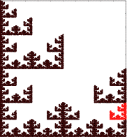

|  |
| Address 213 |
Purpose To become familiar with the addresses of regions in a fractal. This is background for the IFS with Memory lab, and for the Driven IFS lab.
Material Paper and pencil, perhaps a version of IFS software that can highlight addresses
Conclusion Addresses of regions in a fractal specify the order of the transformations producing that region. Among other things, this is a good way to learn that compositions of functions need not be commutative. Because different collections of transformations can generate the same fractal, we see that the adddress of a region depends on the choice of functions.